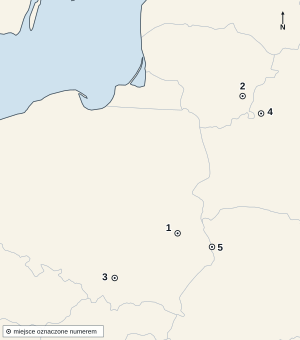
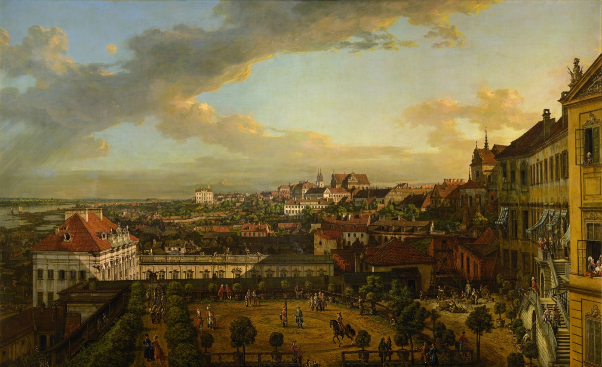

KOD UCZNIA:
Materiał autorski do ćwiczeń, opracowany na podstawie regulaminu szczegółowego oraz archiwalnych arkuszy etapu szkolnego Kujawsko-Pomorskiego Kuratora Oświaty z lat 2018/2019–2025/2026. Nie jest oficjalnym arkuszem konkursowym.
Uzupełnij tekst. W każdą lukę wpisz właściwe określenie.
Od 1378 r. w Kościele zachodnim trwał kryzys zwany (1), w czasie którego nawet trzech duchownych jednocześnie ogłaszało się prawowitym papieżem. Aby zakończyć ten podział, w latach 1414–1418 zwołano sobór w mieście (2) nad Jeziorem Bodeńskim. Sobór wybrał jednego, powszechnie uznanego papieża, (3), kończąc tym samym schizmę. Ten sam sobór skazał na spalenie na stosie czeskiego kaznodzieję i reformatora (4), oskarżonego o herezję mimo listu żelaznego gwarantującego mu bezpieczeństwo. Wyrok wywołał w Czechach wybuch długotrwałych wojen zwanych (5). Na soborze przebywała też delegacja polska, broniąca praw Litwy do jej ziem wobec roszczeń zakonu krzyżackiego; przewodził jej prawnik i rektor Akademii Krakowskiej, (6).
Dopasuj hasło do opisu. Wpisz litery A–G. Jedna odpowiedź jest zbędna.
| 1. Ród panujący w Anglii, którego herbem była biała róża. | |
| 2. Ród panujący w Anglii, którego herbem była czerwona róża. | |
| 3. Ostatni król Anglii z dynastii Yorków, poległy w decydującej bitwie 1485 r. | |
| 4. Miejsce bitwy z 1485 r., w której zginął ostatni król z rodu Yorków. | |
| 5. Zwycięzca spod Bosworth, zakładający nową dynastię i zaślubiający dziedziczkę Yorków, aby połączyć obie zwaśnione strony. | |
| 6. Nowy symbol dynastii, łączący barwy obu dawnych rodów. |
Uzupełnij tekst. W każdą lukę wpisz właściwe określenie.
W 1397 r. w szwedzkim mieście (1) trzy skandynawskie królestwa — Dania, Szwecja i (2) — połączyły się pod berłem jednego władcy, tworząc unię nazwaną od miejsca jej zawarcia. Doprowadziła do niej energiczna władczyni duńska (3), faktycznie rządząca całą unią mimo formalnego osadzenia na tronie młodego krewniaka. Unia rozpadła się ostatecznie w 1523 r., gdy koronę szwedzką zdobył przywódca antyduńskiego powstania, (4), zakładając własną dynastię. Dłużej, bo aż do 1814 r., przetrwał związek Danii z (5).
Dopasuj hasło do opisu. Wpisz litery A–F. Jedna odpowiedź jest zbędna.
| 1. Hiszpański konkwistador, który w latach 1519–1521 podbił państwo Azteków. | |
| 2. Władca Azteków, pojmany podczas podboju jego stolicy i zmarły w niewyjaśnionych okolicznościach. | |
| 3. Stolica państwa Azteków, zbudowana na wyspach jeziora, dziś w miejscu centrum Meksyku. | |
| 4. Hiszpański konkwistador, który podbił państwo Inków w Ameryce Południowej. | |
| 5. Władca Inków, pojmany podstępnie i stracony przez Hiszpanów mimo zapłaconego okupu. |
Oceń prawdziwość zdań. Wpisz P (prawda) albo F (fałsz).
| 1. Iwan IV jako pierwszy władca Moskwy przyjął w 1547 r. tytuł cara. | |
| 2. Przydomek „Groźny” nadano mu współcześnie za jego łagodne i pokojowe rządy. | |
| 3. Iwan IV podbił chanaty kazański i astrachański, poszerzając państwo moskiewskie na wschód. | |
| 4. Oprícznina była elitarną formacją znaną z okrucieństwa wobec bojarów podejrzewanych o zdradę. | |
| 5. Iwan IV zostawił po sobie silne państwo i bezproblemowe następstwo tronu. |
Dopasuj hasło do opisu. Wpisz litery A–F. Jedna odpowiedź jest zbędna.
| 1. Tytuł, który Karol V łączył z koroną Hiszpanii i dziedzicznymi ziemiami austriackimi Habsburgów. | |
| 2. Główny rywal Karola V do dominacji w Europie, król Francji. | |
| 3. Turecki sułtan, sprzymierzeniec Francji przeciw Karolowi V, którego flota i wojska zagrażały posiadłościom Habsburgów. | |
| 4. Syn Karola V, który po jego abdykacji w 1556 r. odziedziczył Hiszpanię, Niderlandy i kolonie zamorskie. | |
| 5. Brat Karola V, który odziedziczył dziedziczne ziemie austriackie i tytuł cesarski. |
Uzupełnij tekst. W każdą lukę wpisz właściwe określenie.
Republika Wenecka była państwem-miastem rządzonym przez dożę, wybieranego dożywotnio przez radę patrycjuszy zwaną (1). Potęgę gospodarczą budowała na handlu z Bizancjum i światem (2), sprowadzając do Europy przyprawy korzenne i jedwab. Okręty budowano seryjnie, niemal jak na linii produkcyjnej, w słynnej stoczni państwowej zwanej (3). Wenecjanie słynęli też z wyrobu szkła na pobliskiej wyspie (4), dokąd przeniesiono wszystkie huty ze względu na ryzyko pożaru. Znaczenie miasta zaczęło słabnąć pod koniec XV w., po (5), gdy nowe szlaki handlowe do Azji ominęły Morze Śródziemne.
Oceń prawdziwość zdań. Wpisz P (prawda) albo F (fałsz).
| 1. Fryderyk II Wielki uczynił z Prus jedno z czołowych mocarstw militarnych Europy XVIII w. | |
| 2. Wojny śląskie, które Fryderyk II stoczył z Austrią, zakończyły się utratą Śląska przez Prusy na rzecz Marii Teresy. | |
| 3. Fryderyk II był zwolennikiem oświeconego absolutyzmu i korespondował z Wolterem. | |
| 4. Prusy pod rządami Fryderyka II odmówiły udziału w rozbiorach osłabionej Rzeczypospolitej. | |
| 5. Sojusz Prus z Rosją Katarzyny II ułatwił obu mocarstwom ingerencję w sprawy wewnętrzne Rzeczypospolitej. |
Rozwiąż krzyżówkę, a następnie wyjaśnij znaczenie hasła z zaznaczonej kolumny.
| 1. Stolica państwa Azteków, zdobyta przez Hiszpanów w 1521 r. |
| 2. Turecki władca, rywal Karola V Habsburga o dominację w Europie i na Morzu Śródziemnym. |
| 3. Tytuł elekcyjnego władcy Republiki Weneckiej. |
| 4. Tajna formacja i system terroru wobec bojarów podejrzewanych o zdradę, wprowadzony przez Iwana IV Groźnego. |
| 5. Państwo, w którym w 1547 r. Iwan IV jako pierwszy władca przyjął tytuł cara. |
| 1. | ||||||||||||
| 2. | ||||||||||||
| 3. | ||||||||||||
| 4. | ||||||||||||
| 5. |
Hasło:
Wyjaśnij, z jaką dynastią angielską kojarzy się to hasło i jak doszło do jej powstania. (1 p.)
Na mapie oznaczono pięć miejsc. Do każdego opisu dopisz właściwy numer 1–5.

Mapa bazowa: Natural Earth 1:50 mln, domena publiczna (CC0), Wikimedia Commons; oznaczenia i opracowanie zadania: własne. Cienkie jasne linie to współczesne granice państwowe, naniesione wyłącznie dla ułatwienia orientacji.
| A. Miejsce zawarcia w 1385 r. pierwszego aktu unii Polski z Litwą, zapowiadającego chrzest Litwy i małżeństwo Jadwigi z Jagiełłą. | |
| B. Miejsce unii z 1413 r., potwierdzającej odrębność Wielkiego Księstwa Litewskiego przy jednoczesnym zacieśnieniu sojuszu z Polską. | |
| C. Miasto, w którym w 1569 r. powołano do życia wspólną Rzeczpospolitą Obojga Narodów. | |
| D. Stolica Wielkiego Księstwa Litewskiego. | |
| E. Stolica Królestwa Polskiego w czasie zawierania pierwszych dwóch unii. |
F. Podaj rok zawarcia unii lubelskiej.
Obejrzyj reprodukcję obrazu i wykonaj polecenia.

Bernardo Bellotto (zwany Canaletto), „Widok Warszawy z tarasu Zamku Królewskiego”, ok. 1773, dawniej w zbiorach Zamku Królewskiego w Warszawie; reprodukcja w domenie publicznej (Wikimedia Commons / Google Art Project).
1. Podaj imię i nazwisko autora obrazu.
2. Jakim przydomkiem, wziętym od swojego słynnego wuja, malarza z Wenecji, posługiwał się też autor (co bywa źródłem pomyłek w atrybucji jego dzieł)?
3. Podaj temat i przybliżony rok powstania obrazu.
4. Podaj imię i nazwisko króla polskiego, na którego dworze pracował malarz, tworząc całą serię takich widoków miasta.
5. Podaj nazwę rzeki widocznej w tle obrazu.
6. Wyjaśnij, dlaczego drobiazgowo dokładne widoki miejskie tego malarza okazały się z czasem szczególnie cenne dla Warszawy, nie tylko jako dzieła sztuki.
„Ani papież, ani cesarz nie są panami całego świata co do rzeczy doczesnych, należących do niewiernych [...], dlatego niewierni mogą zgodnie z prawem posiadać własne państwa i władzę, i nie wolno im tego bezprawnie odbierać.”
Paweł Włodkowic, traktat przedłożony soborowi w Konstancji, 1415–1416 r.; fragment w tłumaczeniu i pisowni uwspółcześnionej.
1. Podaj imię i nazwisko autora cytowanego traktatu.
2. Jaką funkcję pełnił autor na Akademii Krakowskiej?
3. Przed jakim międzynarodowym zgromadzeniem kościelnym przedstawiono ten traktat w latach 1414–1418?
4. Z jakim zakonem toczył się spór, w którym argumentów Włodkowica użyto jako polskiej racji?
5. Jaką główną tezę o prawach ludów niechrześcijańskich głosi zacytowany fragment?
6. Wyjaśnij, dlaczego poglądy Włodkowica uznaje się dziś za jedno z wczesnych źródeł nowożytnego prawa międzynarodowego.
Oceń, czy podane zjawisko było przyczyną (P), czy skutkiem (S) szczególnej pozycji biskupa Zbigniewa Oleśnickiego w państwie po 1434 r.
| 1. Śmierć króla Władysława Jagiełły w 1434 r. i objęcie tronu przez małoletniego Władysława III. | |
| 2. Potrzeba silnej ręki, zdolnej utrzymać porządek w państwie w okresie małoletniości króla. | |
| 3. Faktyczne sprawowanie rządów w imieniu młodego władcy przez biskupa krakowskiego Zbigniewa Oleśnickiego. | |
| 4. Otrzymanie przez Oleśnickiego godności kardynalskiej jako pierwszego Polaka w dziejach, przy sprzeciwie części możnych wobec jego wpływów. |
W zadaniach 1–5 zaznacz albo wpisz literę jednej poprawnej odpowiedzi.
| 1. Jan Zamoyski piastował jednocześnie urząd kanclerza wielkiego koronnego oraz: A. podskarbiego wielkiego koronnego B. marszałka wielkiego koronnego C. hetmana wielkiego koronnego D. wojewody krakowskiego |
|
| 2. Miasto założone przez Zamoyskiego jako wzorcowy, renesansowy ośrodek handlu i nauki nosi nazwę: A. Szczebrzeszyn B. Krasnystaw C. Tomaszów D. Zamość | |
| 3. W 1594 r. Zamoyski założył w swoim mieście uczelnię, znaną jako: A. Akademia Krakowska B. Akademia Zamojska C. Collegium Nobilium D. Akademia Wileńska | |
| 4. W 1588 r., podczas bezkrólewia po śmierci Stefana Batorego, wojska Zamoyskiego pokonały pod Byczyną habsburskiego pretendenta do tronu: A. Maksymiliana III B. Ferdynanda II C. Rudolfa II D. Karola Habsburga | |
| 5. Skutkiem zwycięstwa pod Byczyną i pojmania pretendenta było: A. przyłączenie Śląska do Rzeczypospolitej B. abdykacja Zygmunta III Wazy C. wzmocnienie pozycji Zygmunta III Wazy i zrzeczenie się przez pretendenta praw do korony D. wybuch wojny z cesarstwem |
Dopasuj postać lub pojęcie do opisu. Wpisz litery A–F. Jedna odpowiedź jest zbędna.
| 1. Ksiądz, publicysta i główny ideolog obozu reform, nazywany duszą stronnictwa patriotycznego (środowisko tzw. Kuźnicy). | |
| 2. Marszałek litewski sejmu, współautor Konstytucji 3 maja, później jeden z przywódców powstania kościuszkowskiego. | |
| 3. Marszałek sejmu ze strony koronnej, przewodniczący obradom w dniu uchwalenia konstytucji. | |
| 4. Autor głośnych „Uwag nad życiem Jana Zamoyskiego” (1787), krytykujących wady ustroju i wzywających do reform. | |
| 5. Sejm, który w latach 1788–1792 uchwalił szereg reform ustrojowych Rzeczypospolitej. |
Wykonaj polecenia 1–4.
1. Podaj rok powołania Rady Nieustającej.
2. Pod naciskiem którego mocarstwa doszło do jej utworzenia, wkrótce po pierwszym rozbiorze?
3. Na czym polegała krytyka Rady Nieustającej ze strony patriotów w czasie Sejmu Czteroletniego?
4. Podaj rok, w którym Sejm Czteroletni zniósł Radę Nieustającą.
W zadaniach 1–5 zaznacz albo wpisz literę jednej poprawnej odpowiedzi.
| 1. Praga to prawobrzeżna dzielnica miasta: A. Krakowa B. Warszawy C. Wilna D. Lublina |
|
| 2. Szturm i rzeź ludności Pragi w listopadzie 1794 r. przeprowadziły wojska: A. pruskie B. austriackie C. rosyjskie D. tureckie | |
| 3. Dowódcą wojsk, które dokonały rzezi Pragi, był: A. Aleksander Suworow B. Iwan Fersen C. Katarzyna II D. Grigorij Potiomkin | |
| 4. Bezpośrednim skutkiem rzezi Pragi była: A. odsiecz dla oblężonej Warszawy B. kapitulacja Warszawy i faktyczny koniec powstania kościuszkowskiego C. zwycięstwo powstańców i wyzwolenie kraju D. zawarcie korzystnego rozejmu z Rosją | |
| 5. Wydarzenia w Pradze przyspieszyły ostateczny rozbiór Rzeczypospolitej, do którego doszło w: A. 1793 r. B. 1794 r. C. 1795 r. D. 1797 r. |
Wykonaj polecenia 1–5.
1. Podaj imię i nazwisko polskiego szlachcica, uczestnika konfederacji barskiej, który po jej upadku wyemigrował do Ameryki Północnej.
2. U jakiego naczelnego dowódcy zgłosił się do służby po przybyciu do Ameryki w 1777 r.?
3. Jaką formację wojskową zorganizował, za co bywa dziś nazywany „ojcem” pewnej broni armii amerykańskiej?
4. Podczas jakiego oblężenia w 1779 r. odniósł śmiertelne rany?
5. Wymień innego Polaka, który podobnie jak on wsławił się w wojnie o niepodległość Stanów Zjednoczonych, budując fortyfikacje (m.in. w West Point).
Uporządkuj wydarzenia chronologicznie. Wpisz cyfry od 1 (najwcześniejsze) do 6 (najpóźniejsze).
| A. Rzeź Pragi i upadek powstania kościuszkowskiego. | |
| B. Elekcja Stanisława Augusta Poniatowskiego na króla Polski. | |
| C. Trzeci rozbiór Polski i abdykacja króla. | |
| D. Zawiązanie konfederacji targowickiej i drugi rozbiór Polski. | |
| E. Uchwalenie Konstytucji 3 maja. | |
| F. Rozpoczęcie obrad Sejmu Czteroletniego. |
Kod ucznia:
| Zadanie | Odpowiedzi | Punkty |
|---|---|---|
| I. Sobór w Konstancji | ||
| II. Wojna dwóch róż | 1 …… 2 …… 3 …… 4 …… 5 …… 6 …… | |
| III. Unia kalmarska | ||
| IV. Podbój Ameryki | 1 …… 2 …… 3 …… 4 …… 5 …… | |
| V. Iwan Groźny | 1 …… 2 …… 3 …… 4 …… 5 …… | |
| VI. Karol V Habsburg | 1 …… 2 …… 3 …… 4 …… 5 …… | |
| VII. Wenecja | ||
| VIII. Fryderyk II | 1 …… 2 …… 3 …… 4 …… 5 …… | |
| IX. Krzyżówka | ||
| X. Trzy unie (mapa) | A …… B …… C …… D …… E …… F …… | |
| XI. Obraz jako źródło | ||
| XII. Paweł Włodkowic | ||
| XIII. Zbigniew Oleśnicki | 1 …… 2 …… 3 …… 4 …… | |
| XIV. Jan Zamoyski | 1 …… 2 …… 3 …… 4 …… 5 …… | |
| XV. Reformatorzy Sejmu | 1 …… 2 …… 3 …… 4 …… 5 …… | |
| XVI. Rada Nieustająca | ||
| XVII. Rzeź Pragi | 1 …… 2 …… 3 …… 4 …… 5 …… | |
| XVIII. Kazimierz Pułaski | ||
| XIX. Stanisław August (chronologia) | A …… B …… C …… D …… E …… F …… | |
| Razem | / 100 |